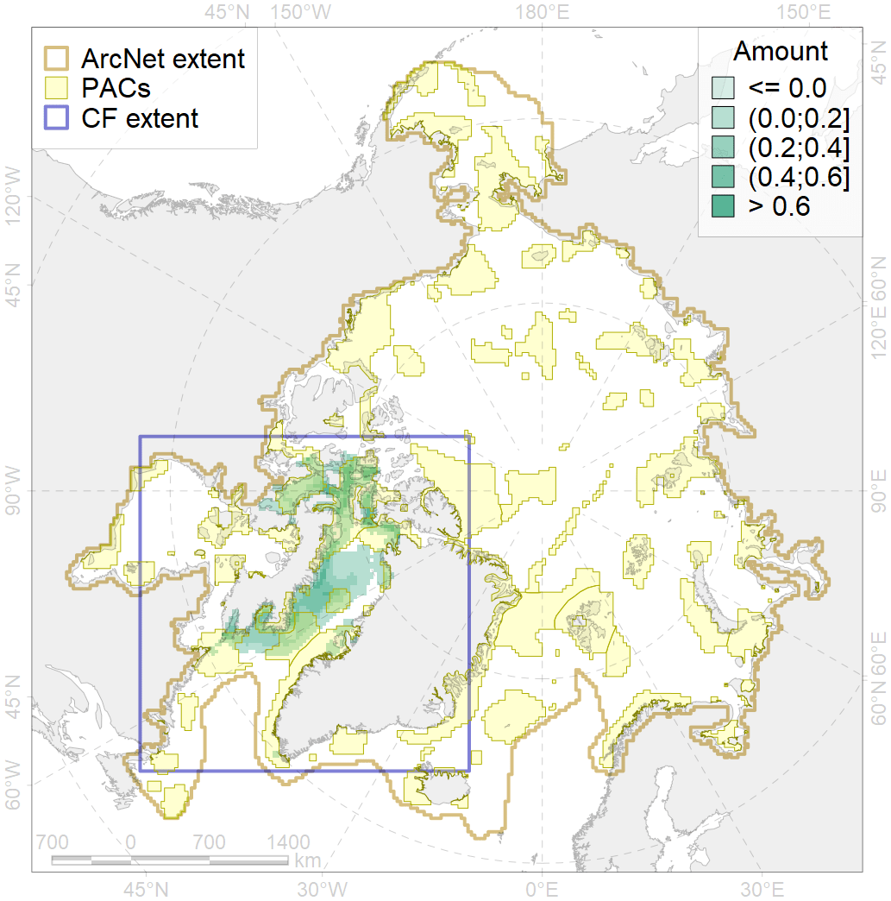
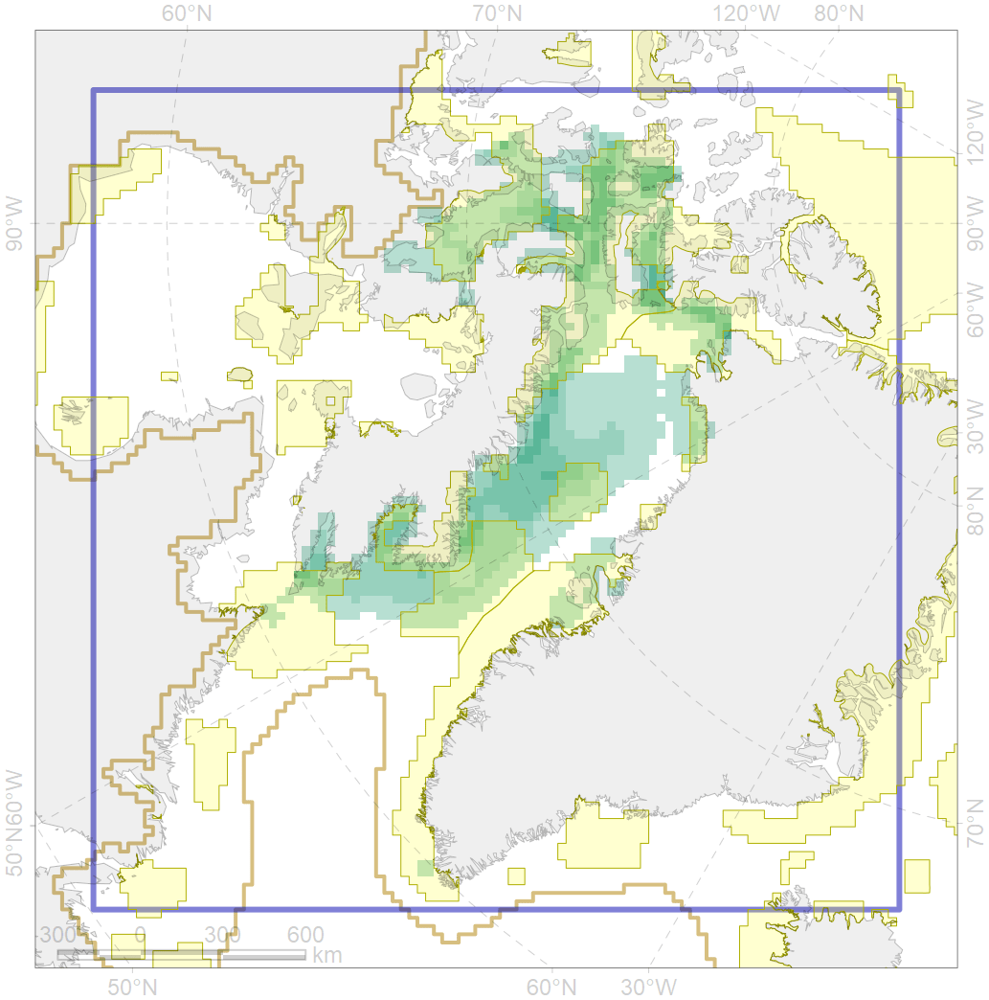

3034

| CF ID | 3034 |
| CF Name | Marginal Ice Zone distribution in July in the Baffin Bay LME |
| Time Period | 1979 - 2017, adopted for recent changes |
| Source(s) | Lavielle M. 1999. Detection of multiple changes in a sequence of dependent variables. Stochastic Processes and their Applications, 83(1): 79–102. doi:10.1016/S0304-4149(99)00023-X. |
| Seasonality | July |
| Depth Horizon | 0 |
| Methodology | Strong C, Rigor IG. 2013. Arctic marginal ice zone trending wider in summer and narrower in winter. Geophysical Research Letters, 40(18): 4864–4868. doi:10.1002/grl.50928. Lavielle M. 1999. Detection of multiple changes in a sequence of dependent variables. Stochastic Processes and their Applications, 83(1): 79–102. doi:10.1016/S0304-4149(99)00023-X. |
| Author Name | Nikita Platonov |
| Notes | |
| Conservation Target Set in the Scenario | 0.24 |
| Conservation Target Achieved in the Scenario | 0.582 (Scenario: 242.7%) |
| PAC ID | Proportion in the PAC | Contribution to ArcNet Target Achievement | PAC’s Contribution to the Achieved Target |
|---|---|---|---|
| 44 | 0.2% | 0.8% | 0.3% |
| 45 | 6.5% | 24.7% | 10.2% |
| 46 | 5.6% | 20.8% | 8.6% |
| 47 | 3.3% | 13.1% | 5.4% |
| 49 | 0.9% | 3.5% | 1.5% |
| 50 | 0.5% | 1.9% | 0.8% |
| 51 | 5.0% | 19.7% | 8.1% |
| 52 | 27.8% | 110.5% | 45.6% |
| 65 | 6.7% | 24.2% | 10.0% |
| 76 | 2.7% | 10.6% | 4.4% |
| inner | 59.1% | 229.8% | 94.7% |
| outer | 40.9% | 12.9% | 5.3% |